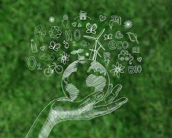

Um Futuro Equilibrado
A agricultura é a base da civilização humana, desempenhando um papel essencial na nossa sobrevivência e no desenvolvimento das sociedades ao longo da história. Desde os primórdios da agricultura, há milhares de anos, até os avanços tecnológicos contemporâneos, essa prática tem sido fundamental para a produção de alimentos, a criação de recursos e a sustentação de comunidades ao redor do mundo.

A agricultura tem o potencial de desempenhar um papel fundamental na construção de um futuro sustentável, oferecendo soluções para alguns dos desafios ambientais mais prementes que enfrentamos hoje. À medida que a população global cresce e os impactos das mudanças climáticas se tornam mais evidentes, repensar e transformar práticas agrícolas é essencial para garantir um planeta saudável e equilibrado. Caso começassemos à parar de produzir muito gado, boa parte do que damos para eles comerem e beberem, poderia ser usado para alimentar bilhões de pessoas, eles ocupam 26% da aŕea abitável do planeta, imagina quantas pessoas poderiam ter moradia se não fosse o gado.
Vantagens:
-
1- Preservação e Restauração do Solo
-
2- Uso Eficiente da Água
-
3- Redução da Pegada de Carbono
-
4- Promoção da Biodiversidade
-
5- Redução do Desperdício e Economia Circular
-
6- Segurança Alimentar e Inclusão Social
-
7- Inovação e Educação

⠀⠀⠀⠀⠀⠀⠀⠀⠀⠀⠀⠀⠀⠀⠀⠀⠀⠀⠀⢀⣀⣀⣀⣀⣀⡀⠀⠀⠀⠀⠀⠀⠀⠀⠀⠀⠀⠀⠀⠀⠀⠀⠀⠀
⠀⠀⠀⠀⠀⠀⠀⠀⠀⠀⠀⠀⠀⠀⠀⠀⠀⠀⠀⢸⣿⣿⣿⣿⣿⡟⠀⠀⠀⠀⠀⠀⠀⠀⠀⠀⠀⠀⠀⠀⠀⠀⠀⠀
⠀⠀⠀⠀⠀⠀⠀⠀⠀⠀⠀⠀⠀⠀⠀⠀⠀⠀⠀⣈⣿⣿⣿⣿⣿⣇⡀⠀⠀⠀⠀⠀⠀⠀⠀⠀⠀⠀⠀⠀⠀⠀⠀⠀
⠀⠀⠀⠀⠀⠀⠀⠀⠀⠀⠀⢀⣤⣤⣤⡀⠀⣠⣼⣿⣿⣿⠿⠿⢯⡿⠿⢤⡀⠀⣀⣀⣀⡀⠀⠀⠀⠀⠀⠀⠀⠀⠀⠀
⠀⠀⠀⠀⠀⠀⠀⠀⠀⠀⢰⣿⣿⣿⣿⣿⣾⣿⣿⣿⣿⡝⠀⠀⠀⠈⠸⠗⠽⣼⣿⣿⣿⣿⢆⠀⠀⠀⠀⠀⠀⠀⠀⠀
⠀⠀⠀⠀⠀⠀⠀⠀⠀⠀⠈⢿⣿⣿⣿⣿⣿⣿⣿⣿⣿⣷⣴⣷⣧⣤⡀⢰⣷⣻⣿⣿⣿⣿⡏⠀⠀⠀⠀⠀⠀⠀⠀⠀
⠀⠀⠀⠀⠀⠀⠀⠀⠀⠀⠀⠀⠉⠉⢹⣿⣿⣿⣿⣿⡝⣴⣿⣿⣿⣯⣍⠀⠈⡌⡟⠛⠛⠋⠀⠀⠀⠀⠀⠀⠀⠀⠀⠀
⠀⠀⠀⠀⠀⠀⠀⠀⠀⠀⠀⠀⠀⠀⣸⣿⣿⣿⣿⣽⣿⣿⣿⣿⣿⣿⣿⠣⣺⣗⡇⠀⠀⠀⠀⠀⠀⠀⠀⠀⠀⠀⠀⠀
⠀⠀⠀⠀⠀⠀⠀⠀⠀⠀⠀⠀⠀⢠⣿⣟⣝⢻⡿⠟⣻⡟⠋⠉⢋⡟⣷⠎⣄⢁⠊⡆⠀⠀⠀⠀⠀⠀⠀⠀⠀⠀⠀⠀
⠀⠀⠀⠀⠀⠀⠀⠀⠀⠀⠀⠀⠀⠘⣿⣿⣿⡇⠀⡀⣿⡧⠀⡴⡾⠰⠁⢙⣦⣭⣼⡇⠀⠀⠀⠀⠀⠀⠀⠀⠀⠀⠀⠀
⠀⠀⠀⠀⠀⠀⠀⠀⠀⠀⠀⠀⠀⠀⠈⠻⣿⣿⣾⣄⣿⣿⣾⣆⣤⣖⣠⣾⡗⣾⡿⠃⠀⠀⠀⠀⠀⠀⠀⠀⠀⠀⠀⠀
⠀⠀⠀⠀⠀⠀⠀⠀⠀⠀⠀⠀⠀⠀⠀⢸⣿⣿⣿⣿⣿⣿⣿⣿⣿⣿⣿⠟⢰⠃⠀⠀⠀⠀⠀⠀⠀⠀⠀⠀⠀⠀⠀⠀
⠀⠀⠀⠀⠀⠀⠀⠀⢀⡠⠤⣠⣶⣝⣿⣿⣿⣿⡛⠑⢩⣿⡿⠓⠛⠉⣁⢎⣮⣰⣿⣏⢶⣤⡀⠀⠀⠀⠀⠀⠀⠀⠀⠀
⠀⠀⠀⠀⠀⠀⣠⣾⣷⣿⣶⣿⣿⣿⣿⣿⣿⣿⣿⡓⣿⣿⣿⠀⠀⣀⣷⢿⣿⣿⣿⠩⢙⣯⣗⣎⣭⣲⣄⠀⠀⠀⠀⠀
⠀⠀⠀⠀⣠⣾⣿⣿⣿⣯⣽⢿⣿⣿⣿⣿⣿⣿⣿⣿⣿⣿⣿⣿⣿⣿⡷⡶⢻⢿⣿⣿⣿⣿⣩⠀⠄⠰⠍⢢⠀⠀⠀⠀
⠀⠀⢀⣼⣿⣿⣿⣿⣿⣿⣇⣠⣿⣿⣿⣿⣿⣿⣿⣿⣿⣭⠁⠈⠙⢻⣋⣹⠐⠀⣿⣿⣿⣿⣷⣖⠁⡀⠀⠓⢣⠀⠀⠀
⠀⣠⠾⠙⠻⣿⣿⣿⣿⣿⣿⣿⡿⢻⣿⣿⣿⣿⣿⣿⡿⠿⠁⠀⠀⠀⠹⢁⠑⠀⡘⡿⣿⣿⣿⣯⢂⣄⡀⠘⣳⡆⠀⠀
⣼⣷⣏⣠⣌⣨⣿⣿⣿⣿⡟⠋⢠⣿⣿⣿⣿⣿⣿⣿⣷⣮⠁⠀⠀⠀⠀⢣⣈⠁⢃⡹⣿⣿⣿⣿⣖⠎⠁⠀⠁⡸⡀⠀
⣿⣿⡿⣿⣯⡿⢵⣿⣿⣿⡶⢆⣾⣿⣿⣿⣿⣿⣿⠛⠛⠋⠀⠀⠀⠀⠀⠀⣗⠑⠈⠁⡹⣿⠻⣿⣿⣷⣵⣦⣤⠊⠁⠀
⠹⣿⣯⣽⣿⣾⣷⡟⠙⠻⢯⠋⣿⣿⣿⣿⣿⣿⣾⣤⡀⠀⠀⠀⠀⠀⠀⠀⢸⠙⠨⢔⠅⣿⡀⠈⣻⣿⣿⡇⠑⠫⠑⡄
⠀⠈⠻⢿⣿⣿⡟⠻⢦⣤⠃⢸⣿⣿⣿⣿⣿⣿⣿⡋⠊⠀⠀⠀⠀⠀⠀⠀⠈⣞⣣⢴⢺⣿⡇⢠⣿⣿⣿⠂⠂⠀⠃⢡
⠀⠀⠀⢸⣿⡿⢿⣤⣤⡜⠀⠘⣿⣿⣿⣿⣿⣿⡿⡋⡷⡂⢀⠀⠀⠀⡀⠀⠀⣗⣿⣓⣾⣿⠇⢸⣿⣿⣿⣧⠠⠀⢲⣸
⠀⠀⠀⠈⠻⢿⣦⣖⡺⠁⠀⠀⣿⣿⣿⣿⣿⣿⣿⣿⣵⠐⡈⠀⠀⠀⠀⠀⠀⣷⣝⣄⣿⣿⠀⢸⣿⣿⣷⠊⠀⠀⣢⡇
⠀⠀⠀⠀⠀⠀⠀⠀⠀⠀⠀⠀⠸⣿⣿⣿⣿⣿⣿⣿⣿⡆⠀⠀⠀⠀⠀⠀⠀⡟⡻⢹⣿⠇⠀⠘⣿⣿⣷⣷⣥⣄⡿⠀
⠀⠀⠀⠀⠀⠀⠀⠀⠀⠀⠀⠀⢀⣽⣿⣿⣿⣿⣫⡟⠊⠁⠀⠀⠀⠀⠀⠀⢀⢗⣽⣾⣯⡄⠀⢀⣾⠿⡟⢿⢟⣋⠁⠀
⠀⠀⠀⠀⠀⠀⠀⠀⠀⠀⠀⠀⢸⣿⣿⣿⣿⣿⣿⣿⣷⣧⣤⣤⣄⣠⡤⣴⣿⣿⣿⣿⣿⣷⣿⣟⢁⢸⠁⠤⣣⡟⠀⠀
⠀⠀⠀⠀⠀⠀⠀⠀⠀⠀⠀⠀⠈⣿⣿⣿⣿⣿⣿⣿⣿⣤⢦⠜⣷⣿⣿⣿⣿⣿⣿⣿⣿⣿⣿⣿⡅⠈⠀⠨⢪⢁⠀⠀
⠀⠀⠀⠀⠀⠀⠀⠀⠀⠀⠀⠀⢸⣿⣿⣿⣿⣿⣿⣿⣿⣿⣷⣵⣿⣿⣿⣿⣿⣿⣿⣿⠿⢿⣷⡟⡠⡷⠁⢂⠧⢹⠀⠀
⠀⠀⠀⠀⠀⠀⠀⠀⠀⠀⠀⠀⣸⣿⣿⣿⡻⢿⣿⣿⣿⣿⠿⠿⣿⣿⣿⣿⣿⣿⣿⣿⣧⣿⣿⣇⣽⡇⣠⣾⢹⡎⠀⠀
⠀⠀⠀⠀⠀⠀⠀⠀⠀⠀⠀⠀⣿⣿⣿⣿⠥⠓⠊⠝⣻⣿⠀⠀⣿⣿⣿⣿⡿⡿⡿⠟⢑⣾⠀⠈⠛⠓⠚⠛⠚⠁⠀⠀
⠀⠀⠀⠀⠀⠀⠀⠀⠀⠀⠀⠀⢸⣿⣿⣿⡊⢀⠀⠀⠐⣿⠀⠀⣿⣿⣿⡿⠉⢠⢁⡀⠼⡿⠀⠀⠀⠀⠀⠀⠀⠀⠀⠀
⠀⠀⠀⠀⠀⠀⠀⠀⠀⠀⠀⠀⠘⣿⣿⣿⡿⢒⡐⣄⣴⡿⠀⠀⢹⣿⣿⣿⢀⠀⠀⢀⣭⡇⠀⠀⠀⠀⠀⠀⠀⠀⠀⠀
⠀⠀⠀⠀⠀⠀⠀⠀⠀⠀⠀⠀⠀⣿⣿⣿⡿⢾⠿⢿⡾⠁⠀⠀⠈⢿⣿⣿⣿⠷⠿⡾⣾⠀⠀⠀⠀⠀⠀⠀⠀⠀⠀⠀
⠀⠀⠀⠀⠀⠀⠀⠀⠀⠀⠀⠀⠀⣽⣿⣿⣿⣇⣠⣴⡎⠀⠀⠀⠀⢸⣿⣿⣿⣾⡅⣌⣿⡅⠀⠀⠀⠀⠀⠀⠀⠀⠀⠀
⠀⠀⠀⠀⠀⠀⠀⠀⠀⠀⠀⠀⢸⣿⣿⣿⢏⠉⠉⢹⢷⠀⠀⠀⠀⢸⣿⣿⣿⡏⠁⠀⠪⣱⠀⠀⠀⠀⠀⠀⠀⠀⠀⠀
⠀⠀⠀⠀⠀⠀⠀⠀⠀⠀⠀⠀⣿⣿⣿⡿⠿⠧⠀⠀⣺⠀⠀⠀⠀⢸⣿⣿⣿⢄⠀⠄⠌⡉⡀⠀⠀⠀⠀⠀⠀⠀⠀⠀
⠀⠀⠀⠀⠀⠀⠀⠀⠀⠀⠀⠀⣿⣿⣿⡃⠀⡀⠀⢠⣿⠀⠀⠀⠀⢸⣿⣿⣿⡄⠗⠀⢀⣸⡇⠀⠀⠀⠀⠀⠀⠀⠀⠀
⠀⠀⠀⠀⠀⠀⠀⠀⠀⠀⠀⠀⢹⣿⣿⣷⢞⡔⠀⠺⡇⠀⠀⠀⠀⢸⣿⣿⣿⣧⡂⢀⠴⣶⠀⠀⠀⠀⠀⠀⠀⠀⠀⠀
⠀⠀⠀⠀⠀⠀⠀⠀⠀⠀⠀⠀⠈⢿⣿⣿⠇⠀⢠⣃⠇⠀⠀⠀⠀⠀⣿⣿⣿⡟⣏⢀⣹⡏⠀⠀⠀⠀⠀⠀⠀⠀⠀⠀
⠀⠀⠀⠀⠀⠀⠀⠀⠀⠀⣀⠤⣶⣿⣿⣿⣿⣗⠒⢿⣷⡄⠀⠀⠀⣠⣾⣿⣿⣷⠚⢳⣾⣦⣄⠀⠀⠀⠀⠀⠀⠀⠀⠀
⠀⠀⠀⠀⠀⠀⣠⣤⣶⣾⣥⡾⣿⠟⣫⣾⣿⣿⣄⣤⣿⣿⠀⠀⡼⣾⣿⣩⣿⣿⣷⣹⣿⡿⢮⣇⠀⠀⠀⠀⠀⠀⠀⠀
⠀⠀⠀⠀⠀⣼⣿⣿⣿⣿⣷⣾⣯⣸⣿⣿⡿⢉⣀⢹⣿⣿⣧⣾⣿⣯⣽⣿⣿⣿⠇⠉⣿⣧⣦⣱⡵⣆⠀⠀⠀⠀⠀⠀
⠀⠀⠀⠀⠸⢿⣿⣿⣿⣿⣿⣿⡺⢼⣿⣿⣗⡊⣘⣹⡛⢋⣿⣿⣟⠪⢻⣿⣿⣿⠂⠧⣽⣿⣧⠁⠀⣟⡄⠀⠀⠀⠀⠀
⠀⠀⠀⠀⠀⠀⠀⠀⠀⠈⠉⠉⠀⠉⠉⠛⠓⠒⠒⠚⠁⠈⠛⠻⠧⠤⠛⠛⠿⠯⠿⠬⠞⠛⠻⠭⠝⠓⠂⠀